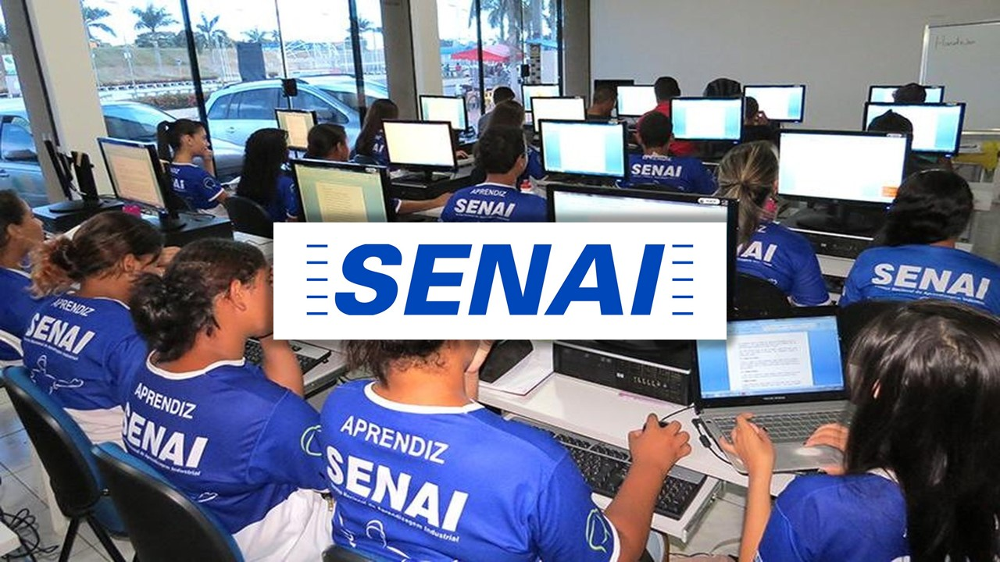
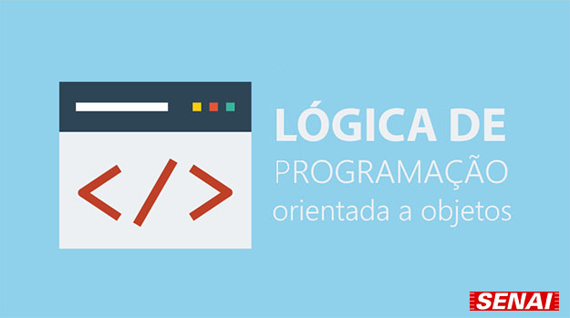
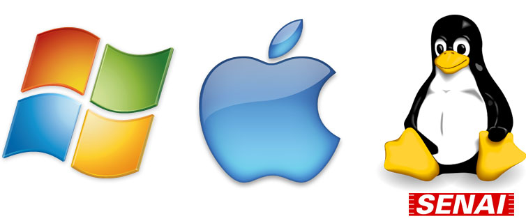
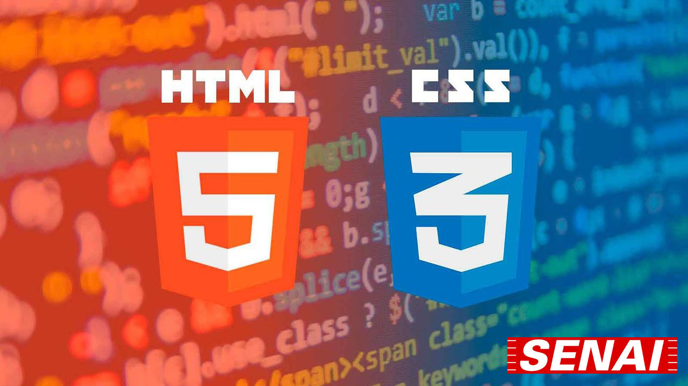

Curso de Desenvolvimento de Sistemas
O curso que é oferecido pelo SENAI Suíço-Brasileira Paulo Ernesto Tolle abranje a maior parte tecnológica, prática e teórica do Desenvolvimento de Sistemas começando com uma grade mais básica para a familiarização das tecnologias e estudo das linguagens de programação, assim desenvolvendo o aluno para conseguir lidar com as ferramentas necessárias para o seu início de aprenizado.
Matérias
HARE - Hardware e Redes
Nessa matéria os alunos trabalham com uma parte mais física mesclada com a lógica das redes, aprendendo sobre protocolos de redes e como configurar servidores tanto em sistemas operacionais Windows ou Linux e fazendo ambos comunicarem entre si ou entre eles mesmo.
A matéria de Hardware e Redes é dada pelo professor James Ferreira da Silva às segundas-feiras a partir dás 19:00(BRT) às 22:00(BRT).
FPOO - Fundamentos de Programação Orientado a Objetos
Nessa matéria os alunos trabalham a parte lógica voltada para back-end, assim desenvolvendo programas que funcionem com a demanda que o professor passe. No primeiro semestre como primeira linguagem de programação, é ensinado a linguagem JAVA.
A matéria de Fundamentos de Programação Orientada a Objetos é dada pelos professores Alexsandro Bittencourt e o professor Herbert Guimarães Borges Ribeiro às terças-feiras e quintas-feiras a partir dás 19:00(BRT) às 22:00(BRT).
SOP - Sistemas Operacionais
Nessa matéria os alunos aprendem mais sobre os sistemas operacionais que eles trabalham, tanto Windows quanto Linux, porém tendo um foco maior em Linux já que em empresas eles acabam utilizando bastante esse sistema, porém nem todos os usuários estão acostumados a utilizá-lo.
A matéria de Sistemas Operacionais é dada pelo professor Herbert Guimarães Borges Ribeiro às quartas-feiras a partir dás 19:00(BRT) às 22:00(BRT).
LIMA - Linguagem de Marcação
Nessa matéria os alunos aprendem sobre a linguagem de marcação e o efeito em cascata (HTML & CSS), voltado para o front-end. Com isso eles são capacitados para desenvolverem web sites.
A matéria de Linguagem de Marcação é dada pelo professor Alexsandro Bittencourt às sextas-feiras a partir dás 19:00(BRT) às 22:00(BRT).